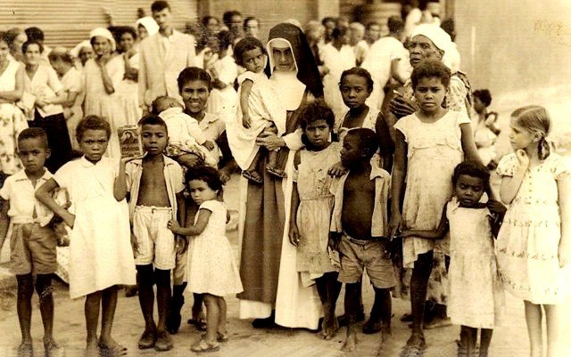
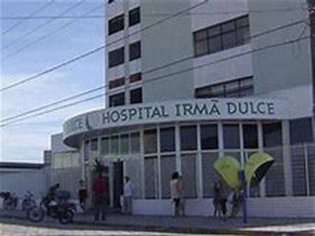
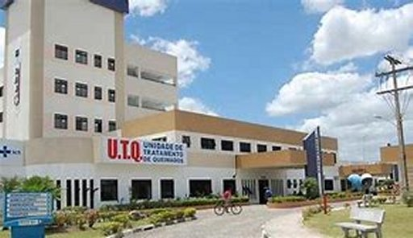
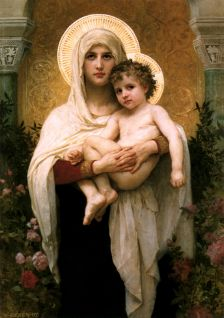
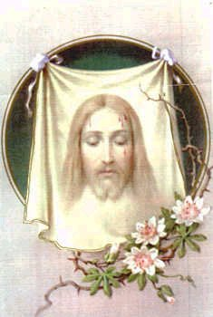

“AS OBRAS
NUNCA CESSARAM”
NO SERVIÇO DE RUA
A Irmã Dulce era elétrica, não
parava para pensar, e assim, observando a situação de muitas pessoas que não
tinham recursos e viviam no sofrimento, começou
a recolher essas pessoas numa
casa velha que estava abandonada. A casa pertencia a Prefeitura de Salvador, que
logo pediu que ela saísse levando todos aqueles pobres que lá se encontravam. A
Irmã tranquila e respeitosamente respondeu: “Que ela sairia na hora em que eles arranjassem um local para cuidar dos seus
pobres e doentes, porque aqueles velhinhos não podiam ficar abandonados na rua”.
Todavia, para evitar qualquer tipo de
questão com a Prefeitura, aos poucos, a própria Irmã, com algumas pessoas que
ajudavam, foram arranjando lugares para os velhinhos, perto do Convento das Irmãs.
Na realidade, durante 10 anos a
Irmã Dulce não tinha conseguido um lugar próprio e especial, para abrigar os
seus doentes. Em 1939, ocupou cinco casas fechadas na Ilha dos Ratos. No dia
seguinte, deparou com uma mulher idosa e doente que mal podia falar. A Irmã a
pegou no colo e a levou para uma casa próxima, que também estava fechada.
Aproveitou e colocou mais três doentes que estavam bem apertados na Ilha dos
Ratos. Alguns dias depois, o dono bateu a porta da sua casa e gritando, chamou a
Irmã Dulce de ladra, mostrando a escritura da mencionada casa, que trazia nas
mãos. Irmã Dulce gentilmente e bastante calma, o convidou para acompanhá-la.
Quando ele entrou na sua casa ocupada, e viu aqueles doentes espalhados pelos
cômodos, alguns gemendo e até crianças com a perna torta e provavelmente
quebrada, ele entrou em crise e chorou. Pegou a escritura da casa e deu a Irmã.
Além desse “Serviço de Rua”,
trabalhou também no POSTO MÉDICO
que construiu com o auxílio do Frei Hildebrando,
e na companhia dele, Irmã Dulce trabalhou no CIRCULO OPERÁRIO e no
ALBERGUES. Foram 20 anos de um longo e extenuante trabalho.
HOSPITAL SANTO ANTONIO

Já corria o ano de 1949 e o impasse continuava:
“Para onde levar os pobres e doentes?”
Depois de muita busca, a Irmã conseguiu autorização
da Superiora do Convento SANTO ANTONIO para ocupar o galinheiro do Convento. Desse
modo, improvisou estruturas de madeira que serviram de cama e assim, deu início
ao embrião do HOSPITAL SANTO ANTONIO
. Ali começava a luta para um projeto admirável.
Enfrentando e vencendo todas as dificuldades, a fundação do HOSPITAL aconteceu no dia 26
de Maio de 1959. Sessenta anos depois, o local já abrigava um dos maiores complexos de
saúde para atendimento gratuito em todo Brasil. Segundo dados oficiais, o HOSPITAL
realiza mais de 3,5 milhões de procedimentos ambulatoriais por ano, para usuários do
Sistema Único de Saúde (SUS) entre idosos, deficientes, tratamento de oncologia,
crianças e adolescentes em situação de risco social e pessoas em situação de
rua, inclusive as pessoas do quotidiano, de qualquer raça ou cor, que tivessem
necessidade. O Hospital foi erguido com a ajuda do então Governador do Estado da
Bahia, senhor Luiz Viana Filho, e também com o auxílio da Fundação Gulbenkian de
Portugal, que doou uma respeitosa quantia em dinheiro. Hoje, no HOSPITAL é
realizado um completo atendimento humano, de alta tecnologia e excelente
qualidade. É também um Hospital-Escola, que oferece campo de ensino e preparação
aos futuros médicos. Uma obra com todo equipamento moderno, que contou com a
colaboração e a participação de muitas pessoas, cristãos verdadeiros e cheios de
amor pela humanidade. Uma obra maravilhosa e verdadeiramente admirável. Além
desse há também o precioso e útil
HOSPITAL IRMàDULCE.

SALVA-VIDAS
Em 1952, um ônibus da cidade e
um bonde se chocaram e pegaram fogo exatamente diante do Convento de Santo
Antonio. Foi um estrondo. Ela estava no quarto que tinha janela para a rua, e
quando ouviu o barulho, olhou e viu o acidente. No ato do choque o ônibus se
incendiou. Irmã Dulce saiu correndo pelo corredor do Convento, gritando:
“Fogo! Fogo! Tem um ônibus com passageiros
pegando fogo lá fora”. Logo algumas Irmãs
saíram na companhia dela para apagar o fogo e salvar os passageiros. Irmã Dulce
e as Irmãs: Hilária, Ana Maria, Gregória e Aparecida, com seus hábitos brancos,
puxaram a mangueira do Convento, e com os extintores do Cine Roma, baldes de água
e latas de areia, saíram para o resgate. Tiveram êxito. Apagaram o fogo e salvaram
todos os passageiros. O trabalho heróico da Irmã Dulce e das demais Irmãs culminou
com valiosas condecorações: todas elas receberam do senhor Prefeito, a Medalha Thomé
de Souza, que foi o fundador da cidade de Salvador, e é a maior condecoração da
Capital Baiana. Mas, a Irmã Dulce, além da condecoração, no discurso do
Presidente da Câmara de Vereadores, recebeu também uma saudação imortal. Ele lhe
outorgou o titulo de “Anjo
da Caridade”.
PROBLEMA QUE ALCANÇOU A ÁREA
RELIGIOSA
Irmã Dulce sempre foi uma mulher
muito simples que lutou abertamente para minorar e proporcionar lenitivo aos
mais pobres e a existência daquelas pessoas
abandonadas e sem esperança de vida.
Ela se empenhava corajosamente para alcançar os seus objetivos de diminuir
também a dor e o desconforto de todos aqueles que viviam numa situação
desesperadora de penúria. Olhava interiormente e no fundo de seu coração sabia
que aquela ajuda aos pobres, sem dúvida, tinha também a Aprovação do SENHOR
DEUS. Acontece que mesmo entre alguns religiosos, às vezes, acontece um estado
de discordância, e assim, considerando que ela como religiosa de formação
enclausurada, não podia viver fora do Convento, realizando aquela Obra Social,
colocavam dificuldades. Muito embora, a bem da verdade, a Regra do Convento
limitava o tempo de assistência das Irmãs ao exterior da Comunidade. E esse
assunto tornou-se preocupante, à medida que cresciam as Obras Sociais e o volume
financeiro para mantê-las. A Congregação das Irmãs Missionárias da Imaculada
Conceição a qual ela pertencia, observava o movimento com alegria, pelo
admirável e maravilhoso trabalho humano, mas, também com preocupação, tendo em
vista as normas da Congregação e talvez, por permanentes criticas de membros com
mentalidade pouco aberta. Por essa razão, em 1943, o Conselho Provincial
decretou algumas medidas restritivas a Irmã Dulce: “A proibição de ocupar a parte administrativa do CIRCULO
OPERÁRIO; a necessidade
de respeitar a carga horária de trabalho apontada pela Superiora da Comunidade
Religiosa; a impossibilidade de ampliar sua ação no Círculo Operário e de tomar
parte na direção do mesmo; a proibição de assinar promissórias ou outros documentos
cuja responsabilidade fosse do
CÍRCULO. A Irmã Dulce
também estava proibida de assinar artigos e de participar de manifestações públicas
que não fossem as festividades junto à ESCOLA DO CÍRCULO”.
Sob o aspecto prático, eram
determinações que na verdade tirava a mobilidade da Irmã Dulce, mas, que mesmo
assim, ela procurou cumprir integralmente, sem envolver de qualquer maneira a
sua Congregação Religiosa e a sua pessoa, em nada financeiro ou desrespeitoso,
preocupando-se exclusivamente com o pronto e eficiente atendimento as pessoas
necessitadas. E assim, os meses passaram.

Em 1964, a Madre Provincial,
Irmã Emília Rosa Seixas Barros fez uma visita ao Convento Santo Antonio, onde
vivia a Irmã Dulce e as outras Irmãs. Durante as conversas na Comunidade, a
Madre lhes comunicou a intenção de estabelecer um horário de fechamento do
Convento. Durante o dia os atendimentos poderiam continuar acontecendo, mas à
noite o Convento seria fechado, e as religiosas deviam viver na Comunidade, ou
no Colégio Santa Bernadete (próximo ao Convento), onde também passariam a
dormir. Irmã Hilária que era uma daquelas que atendiam no Convento com a Irmã
Dulce questionou a Madre Emilia Rosa, “Como elas poderiam deixar doentes crônicos sem auxílio?”...
Ela explicou a Madre, que tinham que sair a noite para
atender os necessitados, pois em caso contrario, eles poderiam morrer sem auxílio.
A Madre insistiu que elas deviam obediência a “Clausura”, conforme a Norma do Convento.
E o diálogo continuou tenso. Irmã Dulce estava com cinquenta anos de idade e
nesse momento se sentiu dividida entre os seus pobres necessitados e as Normas
Conventuais. Ela sempre foi obediente a Congregação e se desdobrava para atender
os seus pobres, sem ferir as normas da Comunidade Religiosa. Como abandonar os
pobres? Pediu tempo a Madre, pois queria rezar e pensar no assunto. Mais tarde,
procurou a Madre para conversar e então, ouviu dela um conselho:
“A senhora deve fazer um pedido de
desenclausuração, ou seja, de sair da Clausura da Congregação. È necessário
proteger a Congregação do grave perigo que as Obras Sociais representam!”
O “cânone 6 do Código de
Direito Canônico” determina:
“A exclausuração só pode acontecer com o consentimento do conselho ou do moderador
supremo, por motivo de causa grave”. O religioso ou a religiosa professa de votos
perpétuos pode ficar afastado até por três anos, com possibilidade de prorrogação de
prazo. E foi exatamente isso o que ocorreu com a Irmã Dulce. Ela pediu o afastamento,
mas continuou usando o hábito que ela sempre honrou.
Para que não houvesse mal
entendimento na sociedade, Dom Eugênio Sales, Administrador Apostólico da
Diocese, colocou a Irmã Dulce sob
“sua obediência direta”, deixando que ela
continuasse o seu admirável e necessário trabalho com os pobres. No dia 20 de Dezembro
de 1964, orientada por Dom Eugênio, a Irmã Dulce escreveu a Madre Emília Rosa:
“Estou de acordo com a retirada das
nossas Irmãs do trabalho do Hospital, do Albergue e também dos outros serviços.
A Congregação das Irmãs Missionárias da Imaculada Conceição não terá nenhuma
responsabilidade com relação às obras de construção e às outras despesas feitas
por mim.”
A despedida das Irmãs foi
dolorosa e triste e fez a Irmã Dulce sofrer muito. Mesmo assim, ela não guardou
nenhum rancor da Madre. Todos os dias ela rezava pelo bem estar dela. Quando a
Provincial passava pela obra do Hospital Santo Antonio, a Irmã a tratava com
toda atenção, como se nada tivesse acontecido. Durante 10 anos Irmã Dulce
permaneceu desenclausurada, usando o hábito com respeito e dignidade,
continuando o seu maravilhoso trabalho por aquele imenso povo necessitado. No
momento certo, pediu para voltar à Congregação, com o apoio de Dom Avelar
Brandão Vilela, Arcebispo de Salvador. Em 1975 quando ela voltou a fazer parte
da Congregação, e quando perguntada ou questionada, ela era veemente em afirmar:
“Na verdade, eu não voltei, porque
realmente eu nunca havia saído da minha Congregação”. Ela continuou usando o hábito com o maior amor e o permanente respeito.
Viveu assim e também morreu usando aquele mesmo hábito.
FALECIMENTO DO PAI
No Dia 25 de Fevereiro de 1976, seu
pai faleceu, depois de ter enfrentado doenças que minaram o seu organismo
durante vários meses. Irmã Dulce chorou muito a despedida do seu querido e amado pai.

 PRÓXIMA PÁGINA
PRÓXIMA PÁGINA
PÁGINA ANTERIOR
RETORNA AO ÍNDICE